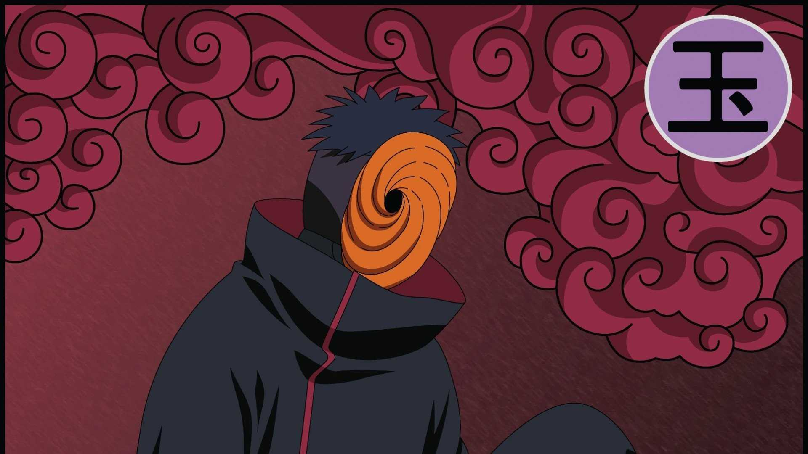
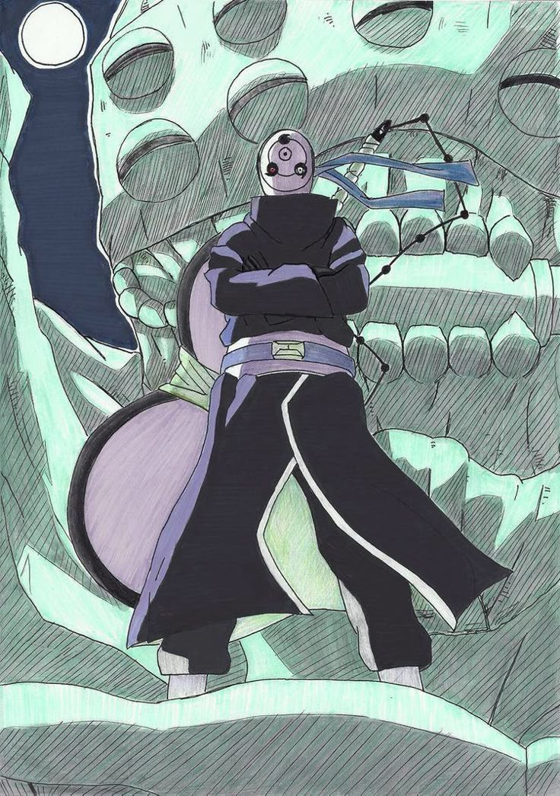

Inicio:
Tobi (トビ, Tobi), cuyo verdadero nombre era Obito Uchiha (うちはオビト, Uchiha Obito), fue un miembro clave de Akatsuki. Llevaba el anillo "Jade" (玉, Gyoku) en el pulgar izquierdo tras la muerte de Sasori. Inicialmente, se hacía pasar por un miembro torpe y cómico, pero más tarde reveló su verdadera identidad como el líder en las sombras de Akatsuki, pretendiendo ser Madara Uchiha.
Historia:
Obito nació en Konoha y fue compañero de equipo de Kakashi Hatake y Rin Nohara. Durante una misión, Obito fue aparentemente aplastado por una roca mientras intentaba salvar a Kakashi, pero fue rescatado por Madara Uchiha, quien lo manipuló y lo convenció de que el mundo era un lugar sin esperanza. Tras presenciar la muerte de Rin a manos de Kakashi, Obito cayó en la desesperación y adoptó la ideología de Madara, buscando crear un mundo de ilusiones a través del "Plan Ojo de Luna".

Como Tobi, Obito se infiltró en Akatsuki y tomó el control de la organización tras la muerte de Yahiko. Utilizó a los miembros de Akatsuki para capturar a las bestias con cola y revivir a los Diez Colas. Durante la Cuarta Guerra Ninja, Obito luchó contra Naruto y los aliados shinobi, pero finalmente se redimió tras ser convencido por Naruto. Murió protegiendo a Naruto y Sasuke de Kaguya Ōtsutsuki.
Habilidades:
Obito poseía el Mangekyō Sharingan, que le otorgaba la habilidad Kamui, permitiéndole teletransportarse a otra dimensión y volverse intangible. También podía usar el Rinnegan, que le permitía controlar a los Diez Colas y utilizar técnicas como el Camino Deva y el Chibaku Tensei.

Además, Obito era experto en el uso del Izanagi, una técnica que le permitía alterar la realidad para evitar la muerte. Su combinación de habilidades espaciales, genjutsu y técnicas de alto nivel lo convertían en uno de los ninjas más poderosos de la historia.